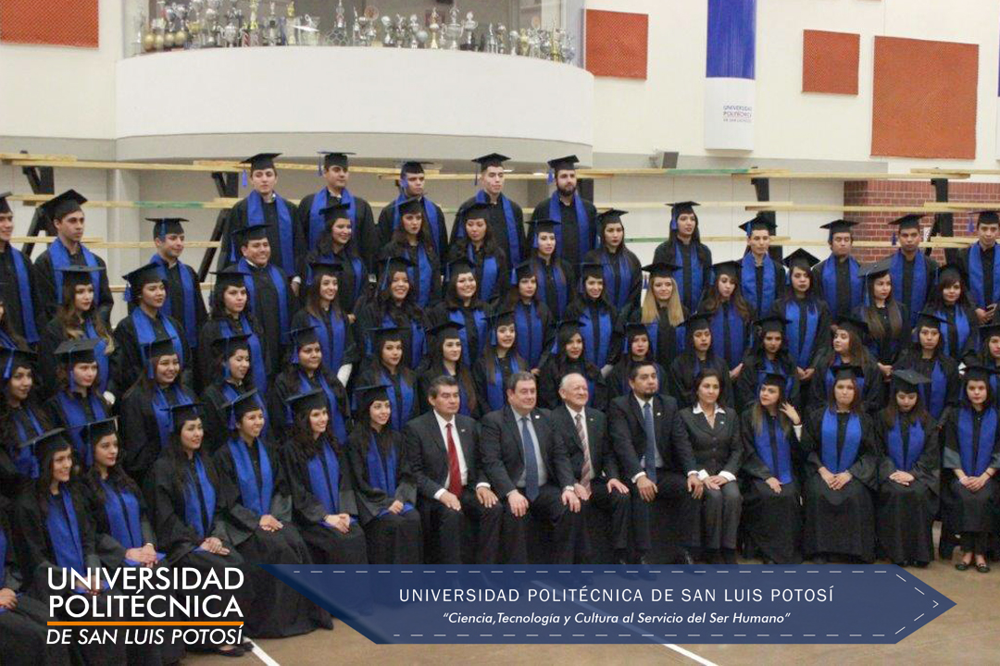

Incorporamos talento universitario al mundo laboral
Accede a la red Universitaria de Empleo a través de OCC Mundial y revisa las ofertas disponibles no sólo en México sino en el mundo. Registra tu Currículum Vitae y obtén una proyección mundial.
¡También puedes seguir todas las actividades de la bolsa de trabajo y de vinculación a través de Facebook!
